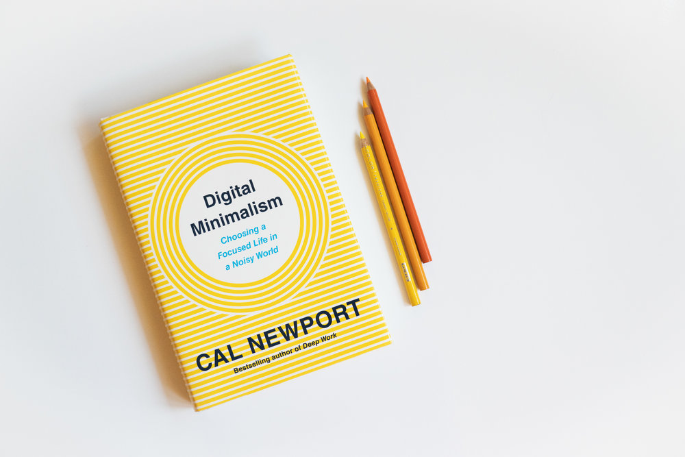

BÀN VỀ CUỐN SÁCH “DIGITAL MINIMALISM” (CHỦ NGHĨA TỐI GIẢN KỸ THUẬT SỐ) – PHẦN 1

Đây có thể coi là một bài review sách, nhưng sở dĩ mình chọn từ “bàn về” vì cá nhân mình thấy có rất nhiều điều mà mình muốn chia sẻ về cuốn sách này, không chỉ dừng lại ở việc review thông thường, mà còn là bàn luận về một số trích đoạn hay trong sách.
Vì vậy mình chia ra làm 2 phần, để giúp các bạn đọc đỡ oải. Dù là chia 2 phần cơ mà ngay ở phần 1 này cũng đã dài tới gần 3000 từ. Nhưng vì đây là một chủ đề khá hay nên mình hi vọng các bạn có thể dành thời gian để đọc đến hết bài, đặc biệt là đối với những ai thực sự quan tâm đến việc hạn chế sử dụng MXH và tránh bị thiết bị công nghệ chi phối, cũng như đối với những bạn đang theo đuổi lối sống tối giản.
Bài viết số 1 này mình sẽ chủ yếu giới thiệu qua về cuốn sách, tóm tắt sách và nêu lên cảm nhận chung. Phần 2 (bài viết sau) sẽ đi sâu hơn vào việc bàn luận một số trích đoạn trong sách cũng như là một số câu chuyện khác mà hiện tại mình tạm thời… chưa nghĩ ra.
Nói qua một chút về chuyện sử dụng mạng xã hội của mình
Là một người sống tối giản, mình vẫn cố gắng duy trì một phong cách sống gọn gàng, ít đồ đạc, cũng như tối giản về mặt tinh thần. Tuy nhiên, riêng về khoản digital – kỹ thuật số (mạng xã hội, youtube, phương tiện truyền thông) thì thú thật mình chưa thực sự để ý đến nó, cũng như chưa có một biện pháp nhất định để ngăn ngừa việc bản thân sa đà vào các trang mạng xã hội thường ngày.
Facebook và Instagram đều có tính năng kiểm tra thời lượng bạn sử dụng app và có thể đặt thời gian để thông báo với người dùng là bạn đã sử dụng quá mức bạn cho phép. Mặc dù đã đặt thời gian giới hạn nhưng mình vẫn thường bỏ qua thông báo và tiếp tục sử dụng, và có những hôm tổng thời gian sử dụng cả 2 mạng xã hội này lên đến 2 tiếng rưỡi một ngày, đấy là chưa tính thời gian sử dụng facebook, hay là xem youtube trên máy tính nữa.
Trong đầu mình luôn nghĩ đến việc sẽ có một ngày mình thực hiện các biện pháp để giảm thời gian sử dụng thiết bị di động, máy tính, hay tiếng Anh thường gọi là “digital detox”, nhưng mình vẫn cứ là một procrastinator (trì trệ, chần chừ) ở khoản này. Cho đến khi mình đọc được cuốn “Digital Minimalism” của Cal Newport và nó thực sự giúp mình nhìn nhận vấn đề liên quan đến công nghệ một cách sâu sắc hơn.
Lần đầu nghe tới tên cuốn sách
Mình tình cờ biết đến cuốn sách này khi đang nghe podcast số 173 của The Minimalists có tiêu đề là “Digital Clutter”,và khách mời ở đây là Cal Newport, một người mà mình đã nghe ở đâu đó nhưng không nhớ rõ lắm, cho đến khi họ giới thiệu Cal Newport là tác giả của cuốn sách bán chạy Deepwork(đã được dịch và bán ở Việt Nam với tên là “Làm ra làm, chơi ra chơi”). Mới đây, Newport đã xuất bản một cuốn sách mới với tiêu đề là “ Digital Minimalism (Chủ nghĩa tối giản kĩ thuật số), và ngay lập tức cuốn sách nằm trong danh sách New York Times Bestsellers.
Chỉ cần nghe thấy cái tiêu đề sách thôi cũng đủ khiến mình muốn đọc ngay lập tức mà không cần phải đọc qua phần giới thiệu cuốn sách. Mình tìm đọc trên Kindle và chỉ mất có 3 ngày để hoàn thành cuốn sách, thậm chí còn đọc lại 1 lần để suy ngẫm và tìm lại một số đoạn trích dẫn hay để có thể đưa lên đây cho mọi người đọc cùng.
Tóm tắt nội dung cuốn sách
Vì đây là sách tiếng Anh nên mình tóm tắt cho mọi người biết qua nội dung một chút, cũng như kèm theo một số câu trích dẫn từ cuốn sách (bằng cả tiếng anh và phần dịch của mình).
Introduction
Tác giả đã dành một khoảng thời gian để tìm hiểu và nghiên cứu về mối quan hệ giữa con người và công nghệ hiện đại, để đi tìm giải pháp cho một vấn đề khá nhức nhối trong thời đại bây giờ, đó là chứng nghiện mạng xã hội và tần suất sử dụng các thiết bị công nghệ hiện đại như điện thoại, máy tính,…
Có rất nhiều tips, bí quyết để giúp cải thiện vấn đề này, ví dụ như việc tránh sử dụng điện thoại vào ban đêm, tắt thông báo ứng dụng,… Những cách này đúng là hữu ích nhưng chừng đó là không đủ để có thể giúp con người thoát hoàn toàn khỏi sự chi phối của thiết bị công nghệ, vì đơn giản là chúng ta chưa thực sự suy nghĩ đủ sâu về nó, và đây cũng là lí do tác giả muốn nghiên cứu sâu hơn về sự ảnh hưởng của công nghệ tới cuộc sống con người.
“Những gì chúng ta cần có là một tư tưởng, một suy nghĩ sâu sắc về việc sử dụng thiết bị công nghệ hiện đại đủ để giúp chúng ta trả lời được câu hỏi chúng ta nên dùng những gì, dùng như thế nào, và quan trọng nhất là có thể gạt bỏ được những thứ khác một cách dễ dàng”
"What you need instead is a full-fledged philosophy of technology use, rooted in your deep values, that provides clear answers to the questions of what tools you should use and how you should use them and, equally important, enables you to confidently ignore everything else."
Trong quá trình nghiên cứu, Newport đã tìm ra câu trả lời, đó là một tư tưởng, một chủ nghĩa có thể áp dụng thành công vào mảng công nghệ, DIGITAL MINIMALISM (chủ nghĩa tối giản kỹ thuật số). Và đây cũng chính là nội dung chính của cuốn sách.
Để giúp người đọc có thể hiểu rõ hơn, tác giả đã chia cuốn sách thành 2 phần. Phần 1 -Nền tảng (Foundation): giải thích cặn kẽ về chủ nghĩa tối giản kỹ thuật số, đồng thời giới thiệu phương pháp “Dọn dẹp kỹ thuật số” (30-day Digital Declutter). Phần 2 – Thực hành (Practice): phần này xem xét kĩ hơn về một số ý tưởng giúp bạn duy trì bền vững cuộc sống tối giản ở mặt kỹ thuật số. Và như Newport nói thì người đọc có thể đọc hết phần 1 trước, thực hành phương pháp “Digital Declutter” trong vòng 30 ngày, sau đó mới tiếp tục đọc phần 2.
Phần 1 – Nền tảng (Foundation)
"Digital Minimalism"
"A philosophy of technology use in which you focus your online time on a small number of carefully selected and optimized activities that strongly support things you value, and then happily miss out on everything else".
“Chủ nghĩa tối giản kỹ thuật số – là một khái niệm mà ở đó bạn tập trung thời gian online của mình vào những ứng dụng, hoạt động đã được tối ưu hóa và lựa chọn cẩn thận, với mục đích hỗ trợ những thứ bạn coi trọng, và sau đó vui vẻ bỏ lỡ mọi thứ khác”.
3 nguyên tắc của chủ nghĩa tối giản kỹ thuật số (The Principles of Digital Minimalism)
1. Cái giá đắt đỏ của sự bừa bộn (Clutter is Costly)
Một digital minimalist sẽ hiểu rõ được việc dành nhiều thời gian và sự chú ý đến quá nhiều thiết bị công nghệ, ứng dụng và dịch vụ sẽ tạo nên một sự ảnh hưởng xấu nhất định và nuốt chửng chững lợi ích nho nhỏ mà mỗi thiết bị, ứng dụng đem lại cho người dùng.
2. Việc tối ưu hóa rất quan trọng (Optimization is important)
Một digital minimalist tin rằng việc lựa chọn những thiết bị công nghệ hỗ trợ những gì họ coi trọng chỉ là bước đầu tiên. Để có thể khai thác tối đa lợi ích tiềm năng thì việc sử dụng những thứ đó như thế nào cũng rất quan trọng.
3. Hài lòng với sự chủ ý (Intentionality is satisfying)
Một digital minimalist hài lòng với những cam kết họ đưa ra trong việc sử dụng thiết bị công nghệ một cách có chủ ý. Đại khái là những người theo chủ nghĩa tối giản kỹ thuật số luôn biết cách để không bị các thiết bị công nghệ chi phối mà ngược lại, chính họ mới là người sử dụng, “chi phối” công nghệ.
Sau khi đã nêu ra những luận điểm, lý thuyết về “digital minimalism”, Cal Newport có nói rằng, để có thể áp dụng lối sống mới này thì cần phải có một sự thay đổi mạnh mẽ trong một thời gian ngắn, từ đó đề xuất phương pháp “Digital Declutter” – Dọn dẹp kỹ thuật số, trong vòng 30 ngày.
Digital Declutter
1. Bắt đầu chiến dịch dọn dẹp công nghệ 30 ngày với việc gạt bỏ những thiết bị công nghệ “tùy chọn” (optional technology) ra khỏi cuộc sống hàng ngày.
Phương pháp dọn dẹp này chủ yếu tập trung vào thiết bị công nghệ hiện đại, ví dụ như ứng dụng (apps), các trang web được sử dụng thông qua màn hình máy tính hoặc điện thoại. Có 2 ví dụ ngoại lệ nhưng cũng có thể được đưa vào đây là trò chơi điện tử và nguồn phát video (youtube, netflix).
Ở đây tác giả có nói là hãy tạm thời gạt bỏ những ứng dụng “tùy chọn” (optional technology). Optional ở đây nghĩa là những thứ mà bạn có thể gạt bỏ nó đi mà không làm ảnh hưởng đến công việc hoặc đời sống sinh hoạt cá nhân. Lấy ví dụ, nếu công việc của bạn yêu cầu việc sử dụng Facebook Messenger, thì bạn vẫn cứ việc sử dụng nó, nhưng có thể là giới hạn thời gian, cách sử dụng để phục vụ cho công việc. Trong khi đó, nếu bạn đơn thuần chỉ sử dụng Facebook như một phương tiện giải trí hoặc kết nối thông thường thì có thể liệt nó vào danh sách optional technology và ngừng sử dụng nó trong 30 ngày.
2. Trong vòng 30 ngày này, hãy khám phá và tìm lại những thói quen tốt, những hoạt động có ý nghĩa
Mục đích thật sự của phương pháp “Digital Declutter” này không đơn thuần chỉ là “tận hưởng” khoảng thời gian tránh xa khỏi thiết bị công nghệ. Trong khoảng thời gian này, bạn phải chủ động tìm kiếm, khám phá những hoạt động có ý nghĩa hơn để bù lấp vào khoảng trống mà thiết bị công nghệ “thừa thãi” đã để lại. Ví dụ như đọc sách, đi dạo phố, tập nhạc cụ,…
Nó cũng giống như việc bạn tạo dựng những thói quen tốt để dần dần thay thế thói quen xấu. Trong thời gian này, nếu bạn không thực sự đứng dậy để tự tìm kiếm, tự tạo ra những thú vui có ý nghĩa thì sau khi hoàn thành phương pháp dọn dẹp này bạn sẽ lại quay lại guồng sinh hoạt xoay quanh những thiết bị, ứng dụng công nghệ vì đơn giản là bạn không biết cách giải quyết tình trạng “boredom” (chán nản) như thế nào trong 30 ngày vừa rồi.
(Mình cho từ “tận hưởng” vào ngoặc kép vì trong sách thì nó viết là “enjoy” nhưng mà mình nghĩ là việc ngưng sử dụng MXH đối với đa số mọi người đều là một cái gì đó tương đối khó khăn.)
3. Sau 30 ngày, giới thiệu lại những thiết bị, ứng dụng công nghệ “tùy chọn” vào cuộc sống của bạn, bắt đầu từ con số 0. Đối với mỗi ứng dụng hoặc thiết bị bạn giới thiệu lại, bạn hãy xác định rõ giá trị phục vụ của nó, và cách mà bạn sử dụng nó trong cuộc sống hàng ngày
Bước cuối cùng này sẽ giúp bạn xây dựng được một lối sống mà ở đó bạn là người làm chủ thiết bị công nghệ, hay nói cách khác, sử dụng một cách chủ ý, giống như một digital minimalist.
Phần 2 – Thực hành
Phần này bao gồm 4 biện pháp, ý tưởng giúp bạn có thể duy trì một cuộc sống tối giản kỹ thuật số. Và bật mí với các bạn, trong phần này có một chương rất thú vị, và mình nghĩ là chưa ai từng nghĩ đến việc này. Phần này mình sẽ bàn luận cụ thể ở bài viết số 2 nên mình chỉ tóm tắt ngắn gọn.
1. Giành thời gian một mình (Spend Time Alone)
Để điện thoại của bạn ở nhà, dành thời gian đi bộ một mình, và viết tâm thư gửi đến chính bản thân mình khi gặp phải khó khăn, đây là những cách tốt nhất để tận hưởng thời gian ở một mình.
2. Đừng bấm nút “LIKE” (Don’t push “Like”)
Đây là phần thú vị nhất trong cuốn sách, vì nó thực sự đi sâu vào vấn đề tâm lý của con người. Không ấn Like ở đây không chỉ nói về việc chúng ta không nên ấn nút like vào các post, trang quảng cáo bán hàng, mà thậm chí là không ấn like vào những bức ảnh em bé của chị họ chẳng hạn. Mình sẽ để dành cái này cho bài viết số 2.
3. Đi tìm lại sự giải trí (Reclaim Leisure)
Thay vì không làm gì thì hãy tự tìm kiếm cho bản thân những hoạt động có ích và tận hưởng nó để tránh bị sa đà vào việc sử dụng thiết bị công nghệ.
4. Tham gia “chiến dịch chống lại sự chú ý” (Join the Attention Resistance)
Ở đây có một cụm từ chuyên môn gọi là “Attention Economy” – Kinh tế sức chú ý, mà theo wiki dịch là “một cách tiếp cận quản lý thông tin coi sức chú ý của con người như một mặt hàng khan hiếm, áp dụng các lý thuyết kinh tế học để giải quyết các vấn đề trong quá trình quản lý thông tin”. Đại khái là những trang web như Facebook sẽ ngầm theo dõi quá trình hoạt động của bạn, lưu lại thành một tệp thông tin gọi là human attention và bán nó cho các advertiser (nhà quảng cáo). Nó liên quan đến một cụm từ khác gọi là “clickbait” mà có thể mình sẽ giải thích cụ thể ở bài viết sau.
Cảm nhận chung về cuốn sách này
Cuốn sách thực sự rất hay, vì nó giúp mình có một cái nhìn sâu sắc hơn về mối quan hệ giữa con người và công nghệ nói chung. Đặc biệt, tác giả đi sâu vào việc phân tích chủ nghĩa tối giản kĩ thuật số, cũng như chia sẻ cách áp dụng tư tưởng đó vào cuộc sống công nghệ hiện đại.
Ban đầu, khi nghe podcast của The Minimalist phỏng vấn Cal Newport, mình thấy hơi nghi nghi, vì Newport là một người vốn từ xưa đã không dùng mạng xã hội, vậy thì ông làm sao có thể hiểu rõ được tâm lý của một người nghiện mạng xã hội và đưa ra những lời giải thích? Chỉ đến khi đọc cuốn sách, mình mới thấy được rằng Newport kì công với việc viết sách như thế nào. Tác giả tham khảo rất nhiều tài liệu, sách của những người khác, theo dõi quá trình “Dọn dẹp công nghệ” của 1600 người đã tham gia vào “cuộc thí nghiệm” mà ông tạo ra, trích dẫn kết quả của một số người thành công và thất bại trong việc áp dụng lối sống tối giản vào mảng kỹ thuật số. Nhìn chung, đây đúng là một cuốn sách được viết bởi một người đi theo lĩnh vực nghiên cứu, một cuốn sách có dẫn chứng đầy đủ và lập luận chặt chẽ.
Tuy vậy, một số dẫn chứng hay ví dụ mà Cal Newport đưa ra trong sách đôi khi có phần hơi dài, thừa thãi, ví dụ như câu chuyện của tổng thống Abraham Lincoln ở chương “Spend Time Alone”, the Amish Country ở phần nào đó mình không nhớ lắm (nhưng vì dài quá nên chỉ đọc lướt qua), hay là các trích đoạn trong cuốn sách Walden của Henry David Thoreau (hầu như chương nào cũng thấy ít nhất một câu).
Chương “Don’t Push Like” là chương mình thấy thú vị nhất, những cũng khiến mình phải suy nghĩ rất nhiều, và mình sẽ chia sẻ với các bạn ở bài viết sau.
Nhìn chung, mình chấm điểm cho cuốn này 4/5. 4 điểm vì sự logic và sâu sắc, trừ 0,9 điểm vì một số điều mình cảm thấy khó hiểu, một số dẫn chứng hơi lan man, và trừ 0,1 cho việc bìa sách hơi… xấu (ý kiến cá nhân của mình thôi)
Phần tiếp theo:
Bàn về cuốn sách “Digital Minimalism” (Chủ nghĩa tối giản kỹ thuật số) – Phần 2


COMMENT
Tarobam 1 ngày trước
Ah the memories of watching Shelter for the first time, and now to re-live the feeling with Hiyumi singing it.
Justin Y. 1 ngày trước
Imagine traveling back decades and explaining to him that in the future, hundreds of thousands of people will be listening to his song on a supercomputer with a picture of a Japanese cartoon.
DigiNeko 2 ngày trước
Classic Masterpiece.